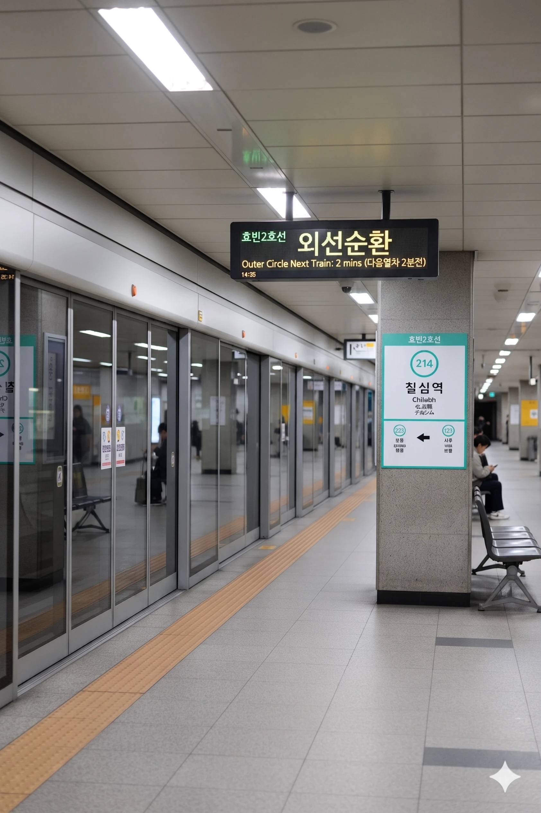

효빈 도시철도 2호선 214번 및 창전선 C09번(예정). 효빈광역시 창전구 칠심동 616에 소재한다. 7개의 마음이 모인 역이라 카더라.
현재는 2호선 단일 역이나, 향후 **창전선** 1단계 구간이 개통되면 환승역이 될 예정이다. 특히 창전선의 **급행 열차 정차역**으로 지정되어 교통 결절점으로서의 위상이 더욱 강화될 전망이다.
1989년 개통된 지하 역사다. 창전구 칠심동의 주거 중심지에 위치하고 있어 상시 이용객이 많으며, 인근 소방서와 행정복지센터 등 주요 공공시설과 인접해 있다. 역사 내부 구조는 지하 3층 규모의 섬식 승강장으로 설계되어 있으며, 최근 대대적인 리모델링을 통해 쾌적한 환경을 제공하고 있다.
창전선 개통 시 역 상부(지상 3층)에 모노레일 역사가 신설되며, 기존 지하 역사와 엘리베이터 및 에스컬레이터로 연결된다. 창전선 급행 열차는 이 역에 정차하여 1호선 환승역인 창전구청역과 함께 창전구의 핵심 급행 라인을 형성하게 된다.
|
2
C
칠심역 출구 정보
|
||
|---|---|---|
| 번호 | 주요 시설 및 방향 | 비고 |
| 1 | 칠심베르디움아파트 | |
| 2 | 창전소방서 | |
| 3 | 오양초등학교 | |
| 4 | 칠심3동 행정복지센터 | |
| 5 | 창전선 역사(공사중) | 신설 예정 |
연도별 일평균 승하차 인원 통계다. 창전구의 탄탄한 배후 수요 덕분에 매년 2만 명 이상의 안정적인 이용객 수를 기록하고 있다. 창전선 환승 및 급행 수요가 더해지면 이용객이 크게 증가할 것으로 보인다.
| 칠심역 이용객 통계 | ||
|---|---|---|
| 연도 | 일평균 이용객 | 비고 |
| 2020년 | 21,039명 | |
| 2021년 | 20,997명 | |
| 2022년 | 22,000명 | |
| 2023년 | 23,278명 | |
| 2024년 | 23,232명 | |

| 유류 ↑ | ||||
| ㅣ | 하 | 상 | ㅣ | |
| ↓ 시로 | ||||
| 상 | 2 효빈 도시철도 2호선 (완행/급행) | 외선순환 시로 · 우전 · 신흥 방면 (급행 정차) |
| 하 | 2 효빈 도시철도 2호선 (완행/급행) | 내선순환 중수 · 시청 · 효빈대학교 · 중앙로 방면 (급행 정차) |
| 하 | ㅣ | ㅣ | ㅣ | 상 |
| ↓ | ||||
| 상 | C 창전선 (완행/급행) | |
| 하 | C 창전선 (완행/급행) |
주요 연계 노선:
창전구 칠심동에 위치한 이 역은 2020년대 들어 일본의 미디어 믹스 프로젝트 《BanG Dream!》의 밴드 Morfonica 멤버 **히로마치 나나미(広町 七深)** 팬들에게 절대적인 성지로 떠올랐다.
2023년, 고립주의자 A씨가 보몽역 사건에 이어 칠심역에서 성지순례를 하던 팬들에게 폭력을 행사하려다, 오히려 팬들에게 **물리적으로 제압당해(참교육)** 경찰에 입건된 사건이다.